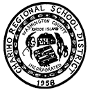

Employment

Education
September 2010 - June 2014
Chariho Career and Technical Center
Computer Technology and Game Design
September 2011 - June 2014
September 2014 - May 2018
Computer Science
Bachelor of Science(B.A.)
SERVICES
I am fluent in these different computer programming languages:
|
Employment |
|
|---|---|
| Here is some of my work over the years. Time in between was usually spent studying in school or holding various part-time jobs (Line-cook, fast-food, etc.). | |
| Camp Yawgoog | |
| August 2012 - August 2017 (Seasonal) | |
| Yawgoog Scout Reservation is widely regarded as being the second oldest Boy Scout camp in the country. Located in Rockville, Rhode Island, this used to be my summer job while in high school and university. My first six years of employment I worked in what was called the Camp Craft Center. This was the department where boys(10 - 17 years.) would go to learn everything to be a Boy Scout. Here I taught the Camping, Cooking, Rope-Works, Wilderness Survival, and Orienteering merit badge. These classes were held lecture style in an outdoor setting that had planned syllabi with additional demonstrations and hands-on experiences planned for the boys. My sixth year I held a more administrative role in managing the department as whole with a co-manager and 10 additional staff. My final year I worked at the food warehouse part-time. | |
|
| |
| March 2018 - October 2019 | |
| AMP Academy is a Parkour, Ninja Warrior, and Capoeira school located in Fall River, Massachusetts. I worked here as a Parkour/Ninja-Warrior coach teaching adult and kid classes along with the owner/head-coach. I managed classes of anywhere between 10-30 people as early as four years old and helped develop lesson plans for each weekly class consisting of acrobatics, agilitiy, and strength. Here my focus was maintaining safety above all, but designing fun and challenging experiences for people of all ages. My students were able to learn to jump, flip, climb, and overcome any obstacle thrown their way in a safe and reasonable approach. | |
| June 2018 - Present | |
| My first and currently held programming job. B2BGateway is a worldwide EDI solutions firm for clientele. The company is based in the U.S., Ireland, and Australia. Here I primarily work in C#, HTML/CSS/Javascript, and VBScript. My role is the Implementation Programmer and lead technical expert for new clients signing to send data through our internal systems. I provide customization options for individual clients on our Warehouse Support Site and EDI software, often working with Project Managers who have primary contact with the client. I also write the software for our standardized internal systems that improve client experience across the board. | |
|
Education |
|
|  | |
|
Chariho Regional High School
September 2010 - June 2014 Chariho Career and Technical Center Computer Technology and Game Design September 2011 - June 2014 | |
|
The University of Rhode Island
September 2014 - May 2018 Computer Science Bachelor of Science(B.A.) | |
|
|